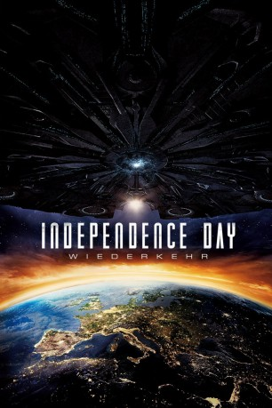

gesehen am 30.08.2016
gesehen am 30.08.2016Alternativ: Independence Day: Resurgence gesehen am 30.08.2016
 
 IMDB-Wertung: 5.3 / 10
IMDB-Wertung: 5.3 / 10  Metascore:
Metascore: 
20 Jahre ist es her, dass Aliens die Erde attackierten und die Hälfte der Bevölkerung auslöschten. Vor allem der mutigen Mission des Piloten Steven Hiller und des Satellitentechnikers David Levinson verdanken wir es, dass die Außerirdischen 1996 besiegt wurden – tragischerweise kam Hiller dann 2007 ums Leben, als er einen Alien-Hybrid-Fighter testete. Und 2016 wird er umso mehr vermisst, als sich die Warnung des Ex-Präsidenten Whitmore bewahrheitet und die Außerirdischen einen neuen, noch verheerenden Angriff starten! Die Menschheit, die in bis dato nie gekannter Einigkeit ein mit Alien-Technologie erweitertes Verteidigungssystem schuf, steht vor ihrer größten Herausforderung. Die Hoffnungen ruhen auf den jungen Kampfpiloten Jake und Dylan, dem Sohn des verstorbenen Steven Hiller…
Jahr: 2016
Dauer: 119 Minuten
FSK: 12
Land: USA Studio: 20th Century FoxTonspuren:
Untertitel: Deutsch,
Auflösung: 1080p (1920x808) Größe: 7639 MB
Genre: Action, Abenteuer, Sci-Fi
Regisseur:  Roland Emmerich
Roland Emmerich
Drehbuch: Thornton Wilder
Soundtrack:
Darsteller:
 Liam Hemsworth als Jake Morrison
Liam Hemsworth als Jake Morrison Jeff Goldblum als David Levinson
Jeff Goldblum als David Levinson Jessie T. Usher als Dylan Hiller
Jessie T. Usher als Dylan Hiller Bill Pullman als President Whitmore
Bill Pullman als President Whitmore Maika Monroe als Patricia Whitmore
Maika Monroe als Patricia Whitmore Sela Ward als President Lanford
Sela Ward als President Lanford William Fichtner als General Adams
William Fichtner als General Adams Judd Hirsch als Julius Levinson
Judd Hirsch als Julius Levinson Brent Spiner als Dr. Brakish Okun
Brent Spiner als Dr. Brakish Okun Patrick St. Esprit als Secretary of Defense Tanner
Patrick St. Esprit als Secretary of Defense Tanner Vivica A. Fox als Jasmine Hiller
Vivica A. Fox als Jasmine Hiller Angelababy als Rain Lao
Angelababy als Rain Lao Charlotte Gainsbourg als Catherine Marceaux
Charlotte Gainsbourg als Catherine Marceaux Deobia Oparei als Dikembe Umbutu
Deobia Oparei als Dikembe Umbutu Travis Tope als Charlie Miller
Travis Tope als Charlie Miller Chin Han als Commander Jiang
Chin Han als Commander Jiang Gbenga Akinnagbe als Agent Travis
Gbenga Akinnagbe als Agent Travis Robert Loggia als General Grey
Robert Loggia als General Grey John Storey als Dr. Isaacs
John Storey als Dr. Isaacs Joey King als Sam
Joey King als Sam Mckenna Grace als Daisy
Mckenna Grace als Daisy James A. Woods als Lt. Ritter
James A. Woods als Lt. Ritter Joshua Mikel als Armand
Joshua Mikel als Armand Jacob Browne als Prison Tech
Jacob Browne als Prison Tech Travis Hammer als Jeffrey Fineman
Travis Hammer als Jeffrey Fineman Stafford Douglas als Flight Officer
Stafford Douglas als Flight Officer Beth Bailey als DC Hospital Nurse
Beth Bailey als DC Hospital Nurse Ron Yuan als Weapons Engineer
Ron Yuan als Weapons Engineer Grace Huang als Female Technician
Grace Huang als Female Technician Stephen Oyoung als Young Man
Stephen Oyoung als Young Man Ivan G'Vera als Russian President
Ivan G'Vera als Russian President Brandon K. Hampton als Officer
Brandon K. Hampton als OfficerDatei: X:\2-Dilogie(G-M)\Independence Day\Independence Day 2 - Wiederkehr (2016, FSK12, 1920x808).mkv seit 29.07.2016
Festplatte: HD Collection-2(A-Z)-3(A-M)
 Alle Filme aus Gruppe '2-Dilogie(G-M)\Independence Day'
Alle Filme aus Gruppe '2-Dilogie(G-M)\Independence Day'